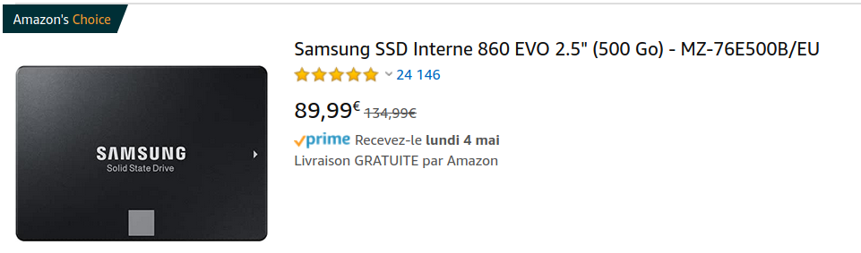
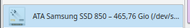

Qu'est ce qu'un octet (en anglais byte) ? Combien de valeurs différentes peut-on représenter avec un byte ?
Comment compter en binaire ? Comptez de 0 à 40
Comment compter en hexadécimal ? Comptez de 0 à 40
Python
Écrire un programme python qui compte jusque 100.
Comment convertir un nombre en binaire et en hexadécimal en python ?
Comment convertir un nombre depuis le binaire ou l'hexadécimal en python ?
Comment représenter plusieurs bytes en python ? Par exemple les bytes [25, 65, 89]
Comment les afficher en hexadécimal en python ?
Kilo, méga et giga
Qu'est ce qu'un Ko, Mo, Go (en anglais Kb, Mb, Gb) quel est le rapport avec un kg (kilogramme) ou un mégapascal (MPa) en physique ?
Qu'est ce qu'un Kio, Mio, Gio ?
J'ai acheté ce disque dur SSD sur amazon où (voir image "image-ssd"),
il est marqué 500 Go, mais quand je regarde dans mon ordinateur il est marqué 465 Gio (voir image "image-gio"),
pourquoi ?
 image-ssd image-gio
Quand les companies téléphoniques vous disent que vous avez "4 giga par mois", s'agit-il de Go ou de Gio ?
Quelles sont les unités utilisées pour mesurer une rapidité de connexion internet ?
Caractères
Comment représenteriez-vous les caractères de l'alphabet "A" à "Z" en bytes ?
Qu'est ce que ASCII ? Comment convertir le caractère "A" en ascii ?
Comment convertir la phrase "Hello, world !" en ASCII ? Combien de bytes sont utilisés ?
Créez un fichier .txt sur votre ordinateur contenant "Hello, world !", faites un screenshot de sa taille en octets. Je veux deux screenshots, un de tout votre écran et un contenant juste l'information demandée.
Comment représenter le caractère "é" ?
Qu'est-ce que UTF-8 ? Comment convertir le caractère "é" en UTF-8 ? Combien de bytes sont utilisés ?
Comment convertir la phrase "J'ai été là-bas." en UTF-8 ? Combien de bytes sont utilisés ?
Créez un fichier .txt sur votre ordinateur contenant "J'ai été là-bas.", faites un screenshot de sa taille en octets. Le fichier est-il en UTF-8 ?
Python
Écrire un programme en python qui affiche le contenu du fichier. Combien y a-t-il de caractères (le programme python doit également calculer ceci) ?
Écrire un programme qui affiche le contenu du fichier en hexadécimal (plus difficile !).
Faites un fichier .txt contenant plusieurs lignes. Comment est représenté le caractère à la ligne ? Combien de bytes utilise-t-il ?
URL
Qu'est-ce qu'une URL ? Donnez-moi une URL vers un article en français.
Quel est le nom de l'article pointé par l'url ci-dessous ? À quoi correspondent les pourcent comme "%C3" ?